`/populate` uses a trusted internal Convex owner lookup, then compares `ownerId` to the authenticated request user before runtime execution.
BigSet PR67 Populate Flow
Public-safe architecture artifact for the in-app populate path. It shows the original auth break, the fixed target loop, and the validation gate that keeps rejected runs from writing fake rows.
Auth break fixed
Rejected runs visible
Accepted rows proven
Browser replay not ready
Accepted rows are written through the internal row writer with source URLs and evidence quotes preserved in Convex. Partial-safe rows can be written without promoting a full recipe.
The dataset page surfaces accepted or rejected populate state, validation score, first issue, source links, and evidence snippets.
Smoke Result
- `make dev` rebuilt and pushed Convex functions.
- Frontend, backend, Mastra, Convex, and Postgres were reachable.
- Chrome-for-testing had a signed-in BigSet session.
- Underspecified prompt returned `422`.
- Committed rows stayed at 0.
- UI showed "Rejected: no rows written".
- Frontend created `Openai Api Docs Pages`.
- `/populate` committed 2 rows.
- UI showed `Accepted full`, score `1.00`, links, and evidence.
The old blocker was an anonymous private Convex read before extraction. PR67 moves past that. Search/fetch-only traces are still marked replay `not_ready`; browser replay requires explicit browser actions instead of a fabricated script.
Before State: Auth Break
The backend reached `/populate`, then failed while reading a private dataset anonymously.

Target App Loop
Signed-in UI, ownership-safe backend load, Mastra runtime, validation, safe commit, and artifacts.

Validation Gate
Rows must have useful cells, sources, evidence, and expected-entity coverage before write.
